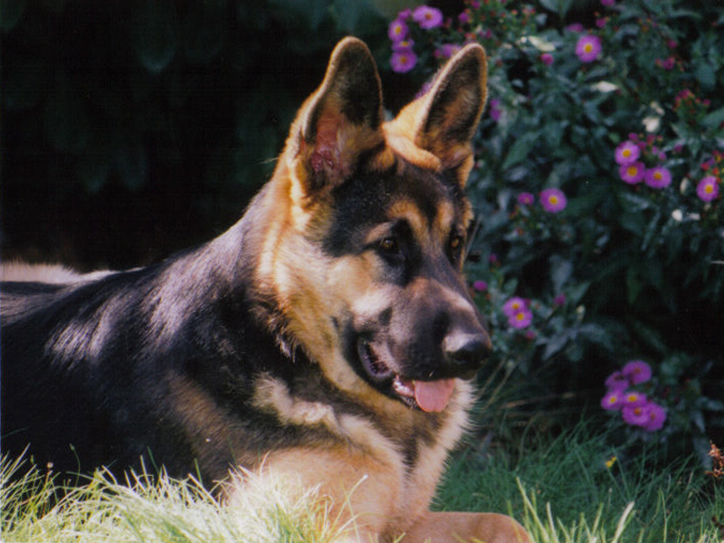
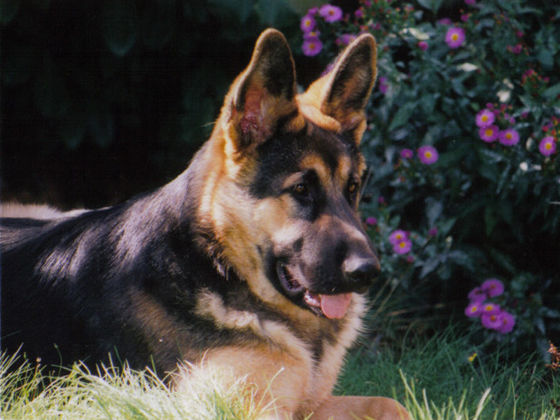

Canis lupus familiaris domestic mammal of the family Canidae (order Carnivora). It is a subspecies of the gray wolf (Canis lupus) and is related to foxes and jackals. The dog is one of the two most ubiquitous and most popular domestic animals in the world (the cat is the other). For more than 12,000 years it has lived with humans as a hunting companion, protector, object of scorn or adoration, and friend. The dog evolved from the gray wolf into more than 400 distinct breeds. Human beings have played a major role in creating dogs that fulfill distinct societal needs. Through the most rudimentary form of genetic engineering, dogs were bred to accentuate instincts that were evident from their earliest encounters with humans. Although details about the evolution of dogs are uncertain, the first dogs were hunters with keen senses of sight and smell. Humans developed these instincts and created new breeds as need or desire arose. Dogs are regarded
 ,
,


 
 learn more in next page click next
learn more in next page click next